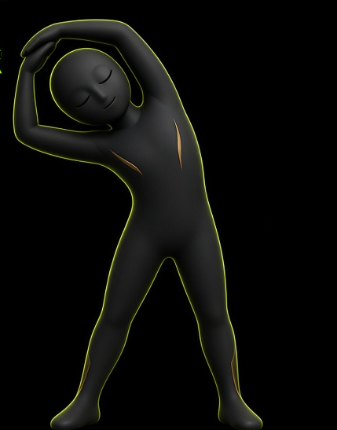

ALONGAR
O movimento é de pé, com as mãos nas pernas, até a abertura lateral com as mãos no chão. São quatro poses do mesmo avatar. A figura de braços altos é só a referência de visual, não a pose do movimento. O exemplo desta cena é 9 de 15.
